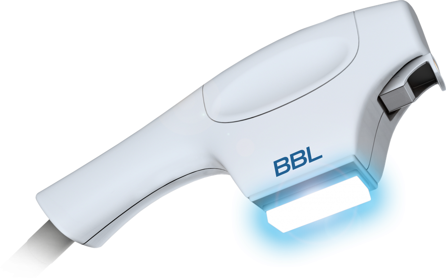

SPOT CHECK ｜ 銀座駅B3出口 徒歩1分
そのシミ、
どのタイプ？
見た目が似ていても、シミの種類によって向いている治療は違います。いちばん近いものを選んでください。
1近いものを選ぶ
そばかす（雀卵斑）に近いかも
顔全体に光を当てる
この治療の初回体験を見る
顔全体に光を当てる
治療を検討することが多いタイプです。
小さな点が広い範囲にあるため、気になる部分だけでなく顔全体で考えます。

BBL光治療（全顔）初回体験：診察・VISIA肌診断込み
表示は治療を選ぶための目安です。実際の治療は、医師の診察とVISIA肌診断をもとに決めます。複数の種類が混ざっていることもあります。
シミは、大きく4つのタイプ。
種類によって、向いている治療や通い方が変わります。
| タイプ | 見た目の特徴 | 検討することが多い治療 |
|---|---|---|
| 老人性色素斑 | 境目がはっきりした茶色のシミ | BBL光治療。濃いものはスポット照射を組み合わせることも |
| そばかす | 鼻から頬に散らばる小さな点 | BBL光治療（全顔） |
| 肝斑 | 頬骨のあたりに左右対称、境目がぼんやり | 刺激を抑えた治療から。ピコトーニングを4週間以上あけて行うなど、医師が判断 |
| くすみ・色ムラ | 顔全体のトーンのばらつき | ピコトーニング（全顔） |

迷ったら、VISIAで見てから。
見た目だけでは分けにくいシミも、肌診断機で撮影して医師が確認します。